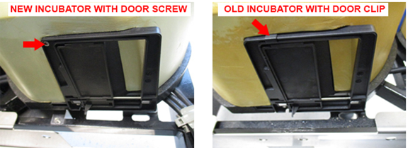
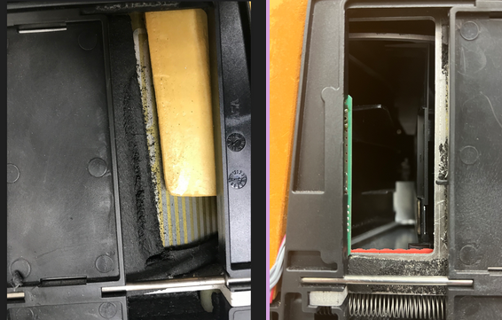
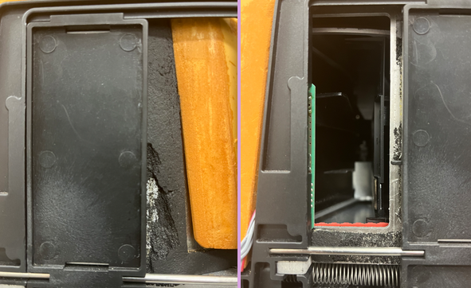

Incubator Door Is Open
Error Codes
| Dec | Hex |
|---|---|
|
032.002.00121 033.002.00121 034.002.00121 |
0x20.0x02.0x79 0x21.0x02.0x79 0x22.0x02.0x79 |
Complaint Description
Incubator Door is open, so no movement is allowed.
Incubator 1 = High Temperature Incubator
Incubator 2 = Transition Incubator
Incubator 3 = AMP Incubator
Technical Support
MTU Stuck Halfway in the Incubator
The customer may be able to confirm that the MTU is stuck halfway in the incubator by opening the instrument left side panel, and looking down the Linear Distributor track. The problem could be related to distributor interference with the door.
Review logs for Distributor Lost Steps at the incubator position. Dispatch an FSE Field Service Engineer. if the problem persists.
Field Service Engineer. if the problem persists.
Door Home Sensor is Faulty
The incubator door home sensor may be faulty if there is no MTU stuck in the incubator.
Shut down and restart the instrument, and monitor for recurrence. If issue recurs, dispatch an FSE.
Door Stuck Open
The door is physically stuck open without anything physically preventing it from closing. Either the door bearing is sticking or there is torsion on the door itself creating too much friction on the bearing.
The customer may be able to see the position of the Linear Distributor. If the distributor is not seen at the incubator door position – can they see if the door is stuck open? If so, dispatch an FSE.
Field Service
MTU Stuck in the Incubator
- Review Messages and/or Health Report and System logs to determine if there are any Linear Distributor lost steps at the incubator or any other positions.
- Restart the Panther Software and allow the system to deactivate and unload MTU’s prior to starting service. If unload will not complete use Service Software to check and unload MTU’s from the incubator. If any are present ensure they are properly deactivated before continuing.
Resolution
- Check incubator carousel belt tensioning and adjust if necessary.
- Check alignment of the incubator slots – refer to Incubator Slot Alignment in the Panther System Service Manual. The MTU should not be rubbing against the door when placed into the incubator.
- Inspect the Linear Distributor hook and theta drives for looseness or any other situation that could contribute to incorrect teaching.
- Teach the Linear Distributor to the Incubator or to all modules if the Linear Distributor is found to be the root cause.
Test
- If root cause is found to be at the incubator, perform a five-cycle System OQ to the incubator.
- If the Linear Distributor is at fault, perform a two-cycle System OQ to all modules.
Incubator Door is Physically Stuck Open
-
Manually cycle the door open and closed by hand (gloves must be worn). The door should move freely, and snap shut by the force of the spring in the door.
-
Verify the Incubator door clip is present if appropriate.
Note: Screws were cut into all Panthers above Serial #00919 – Incubators with a screw do not require installation of door clips. If Panther SN is above #00919 ensure screw is present and secure.
-
Restart the Panther Software, and allow the system to deactivate and unload MTU’s prior to starting service. Ensure there are no MTUs present in the incubator.
-
Check the seating of the Incubator cap against the door and check the seating and positioning of the incubator door.
Resolution
-
If debris is found on the door slide rail, clean the rail with ethanol and determine and address the source of the debris. LIGHTLY lubricate the rail with Teflon based oil.
-
If the incubator door is bent or warped – replace the door.
-
Install door clip per Panther System Service Manual.
Note: Screws were cut into all Panthers above Serial #00919 – Incubators with a screw do not require installation of door clips. If Panther SN is above #00919 ensure screw is present and secure.

Test
- Manually cycle the door open and closed by hand. (Gloves must be worn!) The door should move freely and snap closed by the force of the spring in the door.
- Perform a two-cycle Incubator System OQ.
Incubator Door Home Sensor is Faulty or Incorrectly Positioned
- Manually cycle the door open and closed, paying close attention to the way the edge of the door seats when it closes by spring force.
- In Service Software, read the incubator door sensor state – open the door by hand and let it close. Read the sensor. Repeat in order to duplicate the problem.
- Determine any physical cause of the door failing to fully seat – check for door bearings that have moved out of place, door warpage, and the like.
Resolution
- Reseat the door home sensor PCB by loosening the screws that hold the door in place.
- Clean the door home sensor.
- Replace the door home sensor PCB.
- Replace the door.
Test
Perform a five-cycle Incubator System OQ.
Incubator Main PCB is Faulty
Inspect the Incubator Main PCB for damage (for example, something leaked on the PCB).
Resolution
- If leaking is apparent, determine and address the source of the leak.
- Replace the Main PCB, and any other components damaged by the leak.
Test
Perform a five-cycle Incubator System OQ.
Incubator Door Home Sensor Cable Disconnected or Damaged
Inspect the incubator Door Home sensor cable and connector for damage or disconnection.
Resolution
Reconnect the cable or replace if necessary.
Test
Perform a five-cycle Incubator System OQ.
Degraded Incubator Foam
It seems that after several years, this black foam (see photographs below), on the HT incubators especially, can start to degrade. This could cause Door sensor errors and possibly Carousel move errors.
Resolution
Inspect the incubator for degrading foam. Refer to images below. If it is not bad enough, then you could try to clean up the bits of foam and ensure that it does not interfere with door movement. Otherwise, a module replacement will be required.
If there was a Door or Carousel move error, then this should also definitely be looked at. If degraded foam is found in an old HT incubator, then it probably requires a module replacement. If it is a newer module or non-HT incubator and the FSE can identify piece(s) of foam that may have caused an obstruction, then it could be fixed.
Of the four pictures below, the first two were reported to be from an incubator that had Door errors.
These photographs were from an incubator that had Door errors. This would likely require a module replacement.

Photographs below were from an old HT incubator in the lab, but has not reported Door errors. It looks a bit different, as there is no indication of fine particles like the two pictures above. I would not replace this during a PM, but ensure that there are no stray pieces of foam that could cause errors, and the door is moving smoothly. If this were seen upon a Door failure, I would replace the module, unless I saw something that could be fixed, such as a piece of foam that caused the error and that could be removed.

 button at the top of the page to send feedback, comments, or change requests.
button at the top of the page to send feedback, comments, or change requests.